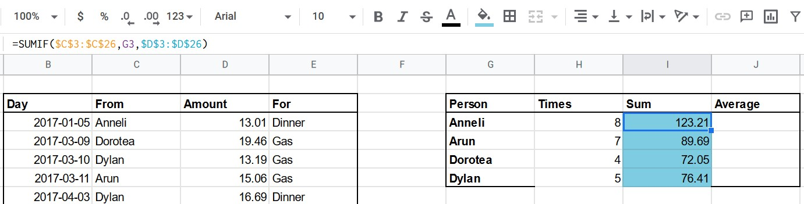

Functions
1)Flow control - IF
These are functions that use a certain logical value
as one of their arguments and evaluate according to that value.
IF(logical_expression, value_if_true, value_if_false): depending on the logical_expression,
return value_if_true when its result is TRUE, return value_if_false otherwise.
2)Nested logical functions - IF
To understand this, you can think of IF functions as parts of a decision tree.
In each splitting of the tree, you follow a path depending on the value of a logical expression.
If the expression is TRUE, you follow one branch, if it is FALSE you follow the other.
When you nest IF statements, you're just following along the branches of the decision tree. Visually this looks as follows:
3)Combining logical values - OR, WEEKDAY
OR(logical_expression1, [logical_expression2, ...]):
this is the logical operator that returns TRUE if one of the expressions is TRUE and FALSE if and only if all of them are FALSE.
For example, we can determine whether a cell (e.g. A2) is equal to 21 or 22 by using the following formula: =OR(A2 = 21, A2 = 22).
WEEKDAY(date, [type]): evaluates to the day of the week of a date. type is 1, 2 or 3.
type = 1: Sunday is day 1 and Saturday is day 7 (default)
type = 2: Monday is day 1 and Sunday is day 7
type = 3: Monday is day 0 and Sunday is day 6
4)Conditional counting - COUNTIF
COUNTIF(range, criterion): count the number of times the criterion is met in the specified range.
range: the source data that is used. Typically, you'll need to use an absolute reference for this one.
criterion: a pattern to check for. It can be as simple as a string you want to match on.
For example: "good".
For example: if A1:A3 contains "good", "bad", "bad", then = COUNTIF(A1:A3, "bad") evaluates to 2
5)Conditional aggregation - COUNTIF
COUNTIF(range, criterion): count the number of times the criterion is met in the specified range.
Range: the source data that is used. Typically, you'll need to use an absolute reference for this one.
criterion: a pattern to check for. It can be as simple as a string you want to match on, e.g. "Dylan".
You'll see more complex criterions in later exercises.
For example if A1:A3 holds "Arun", "Dylan", "Dylan", then = COUNTIF(A1:A3, "Dylan") evaluates to 2.
6)Conditional sum - SUMIF:
SUMIF(range, criterion, sum_range): evaluates to the conditional sum across a range.
Range: the range on which the criterion will be checked
Criterion: the pattern that will be checked, e.g. "Dylan"
Sum_range: the range of values that will be summed up
For example if A1:A3 holds "Arun", "Dylan", "Dylan" and B1:B3 has 3, 4, 8, then = SUMIF(A1:A3, "Dylan", B1:B3) evaluates to 12.

We are using reference arguements and not absolutes.
7)Conditional average - AVERAGEIF
Another interesting statistic you can calculate grouped per all the categories is the average.
You're going to be using AVERAGEIF:
AVERAGEIF(range, criterion, average_range): evaluates to the conditional average across a range.
range: the range on which the criterion will be checked
criterion: the pattern that will be checked, e.g. "Dylan"
average_range: the range of values that will be summed up
For example if A1:A3 holds "Arun", "Dylan", "Dylan" and B1:B3 has 3, 4, 8, then = AVERAGEIF(A1:A3, "Dylan", B1:B3) evaluates to 6.
8)Automating the lookup - VLOOKUP
VLOOKUP(search_key, range, index, is_sorted): look for a match in the leftmost column of a lookup table and return the value in a certain column:
search_key: the value to search for
range: the lookup table, without the headers. You typically use an absolute reference for this.
index: the column number of the value to be returned, where the first column in range is numbered 1
is_sorted: should be FALSE for now
You can compare it to the process of looking through a phone book.
The search_key would be the name of the person you want the phone number of.
The range is the data in the book, with the names in the leftmost column.
Finally, the index is the number of the column where you find what you need, the phone number.
9)HLOOKUP
Although way less common, it can be useful to do a lookup through horizontally organized data.
HLOOKUP(search_key, range, index, is_sorted): similar to VLOOKUP but in a horizontal fashion.
The key will be looked for in the uppermost row, and index now refers to the row number.
You're now going to use the last argument, is_sorted. If set to TRUE (default), the function assumes that the values in range are sorted. When this is the case, the match doesn't have to be exact, but HLOOKUP will look for the closest match less than or equal to search_key. If search_key is FALSE, an exact match is required.
For example, =HLOOKUP(0.57, $C$29:$H$30, 2, TRUE) would evaluate to E in the given spreadsheet, as the closest match less than or equal to 0.57 is 0.33.
SOURCE: DATACAMP course on spreadsheets